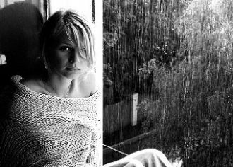
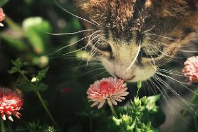
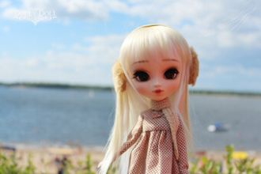

Слезы - это соль, а потом вода.Под конвоем время ведет куда?Две любви прошли где-то стороной.И не хочешь третьей любви такойЭй..
Я бы хотела, тебя послушать. Садись поближе, и дай мне хороший совет. Откуда взялся, на мою душу. Я не знаю, но не спасает, меня твой амулет.
Давно решил, что не влюблюсь я больше никогда. И тут, явилась ты, мой котик, котик, котик, котик. Был не зависим, а сейчас так скучно без тебя,
He said let's get out of this townDrive out of the cityAway from the crowdsI thought heaven can't help me nowNothing lasts forever

Привет, привет, привет.. Любовь.Поверь, я хочу быть с тобой,Когда ветер стирает холодную ночь.В венах моих нагревается кровь
Ты со мной немного знаком,Но я опять дрожу, как перед прыжкомС парашютомПочему-то.У меня растерянный вид,
Припев:Твои зелёные глазаУлыбку дарят и покой.Твои зелёные глазаПолны теплом и добротой.Твои зелёные глаза
Моё платье - твоих рук родные объятья. Мои чувства, давно живут на распятье. Второпях, на губах согреваются страстью.
[Justin Bieber]What do you mean? OoohWhen you nod your head yes
Между нами километры городовОбжигают ожидания звонковРвется сердце словно бабочка на светНочь ответит ни тебя ни света нет
В этот серый, скучный вечерЯ тебя случайно встретил,Я позвал тебя с собоюИ назвал своей судьбою.У тебя глаза как море,
Син к1ераме гул дела ду.Хаза сюре вай хьура ю.Вай безамаш хоржура бу.Шайна везарг к1астура ву.Вай безамаш хоржура бу.
1-ый куплет:Вей Безам декхьала ца хилла Чу харцахь са дагу йотинна г1алаГ1уттур яц хьохьа со дог дилла
Свет твоего окнаДля меня погас,Стало вдpуг темно.И стало всё pавно,Есть он или нет,Тот волшебный цвет...Свет твоего окна -
Снова зовёт тебя ночь.Снова уходишь ты вдаль.Кто мне сумеет помочь.Снова теряю тебя.
Диск телефона я бессмысленно кручу,А я твой номер набираю и молчу…Сегодня вечером ко мне придут друзья.А почему же мне придти к тебе нельзя?
Дни проносились разлук и ночи слёз.Ах! Как же ранят шипами стебли роз.Но я нашей встрече рада,Я ждала тебя!

Wake up to your dreamsAnd watch them come trueI'll make you whisper my name, i'll never leave the roomNight and day, i'll be your muse
Это небо для меняТы с утра нарисовал.Подарил на память высокоЛетящий самолет,Влюбленный в облака.Но остался только след

Закрой глазаПредставь меняИди ко мнеЯ вся твоя…Закрой глазаПредставь меняИди ко мнеЯ вся твояМы улетаем навсегда